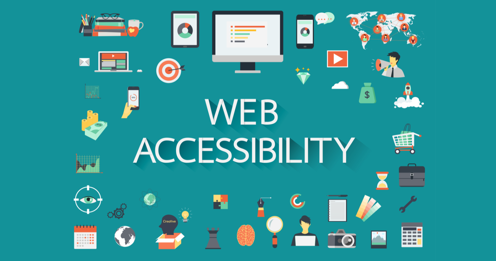
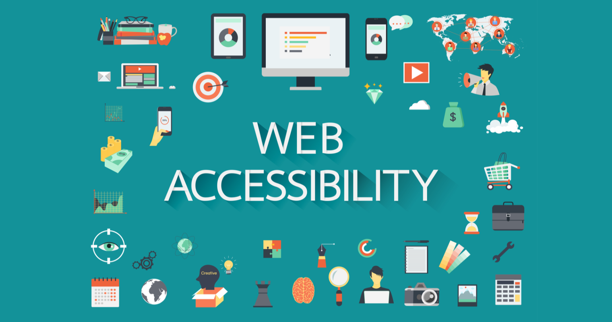

Accessibility is the concept of whether a product or service can be used by everyone—however they encounter it. Accessibility laws exist to aid people with disabilities, but designers should try to accommodate all potential users in many contexts of use anyway. To do so has firm benefits—notably better designs for all.
Accessibility is not confined to a group of users with some different abilities, for example, visual, motor, auditory, speech, or cognitive disabilities, rather it extends to anyone who is experiencing any permanent, temporary or situational disability, e.g., having only one arm is a permanent condition, having an injured arm is a temporary, and holding a baby in one arm is situational — in each case the user is able to complete tasks with only one hand.
 
